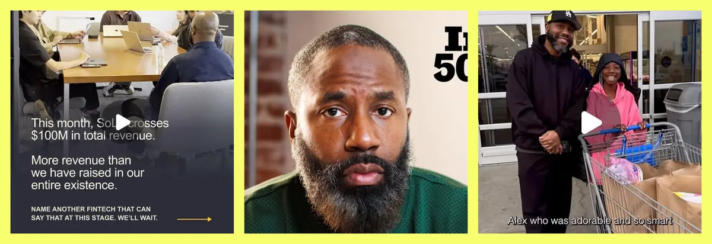
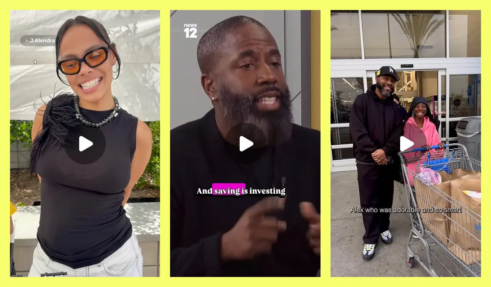

solo funds
I run content and community for a regulated fintech with a 2M+ member community.
- Role
- Head of Content & Community
- Place
- Los Angeles, CA
- Dates
- Mar 2024 to present
- Disciplines
- Community strategy, Lifecycle email, Crisis communications, Team leadership
The brief
SoLo Funds is a regulated fintech platform for community lending. I joined as Community Manager in March 2024 and now lead content and community as Head, with two direct reports.
Everything we publish and every program we run is built to the standards of a regulated fintech and in step with our bank partners.
What I did
Daily community
Daily engagement across a 2M+ member community, plus webinars on company status and one-on-one member support.
SoLo Gold
Scaled SoLo Gold, the VIP tier, to 2,500 members, with membership up 30% and 80% of members retained.
The Wealth Break newsletter
Grew the weekly consumer finance newsletter by 50K subscribers, with open rates between 30 and 40%.
Onboarding and crisis comms
Designed the onboarding and engagement programs as Community Manager, and led crisis communications through a major platform migration.
Results
- 2M+
- member community
- 2,500
- VIP tier members
- +30%
- SoLo Gold membership
- 80%
- Gold retention
- +50K
- newsletter subscribers
- 30-40%
- newsletter open rate

